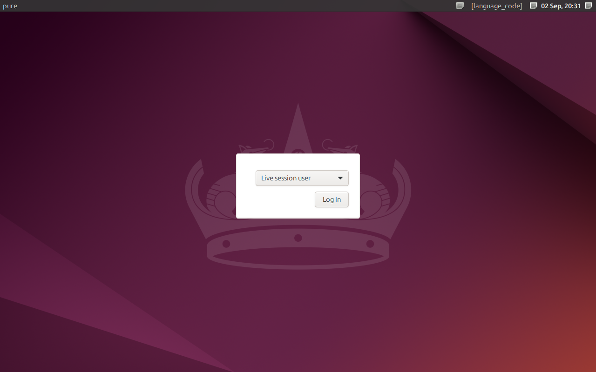

An intelligent, lightning-fast operating system with built-in AI and a stunning glassmorphism interface.

Built from the ground up for the modern user.
Powered by LLaMA 3. Run powerful AI models directly on your local machine without needing the internet. Total privacy, total control.
Optimized for peak performance. PURE OS uses less RAM and boots instantly, leaving more resources for your heavy workflows.
A breathtaking user interface. Enjoy translucent windows, smooth animations, and a modern design that feels like the future.
Download the PURE OS ISO and install it using Rufus or BalenaEtcher.